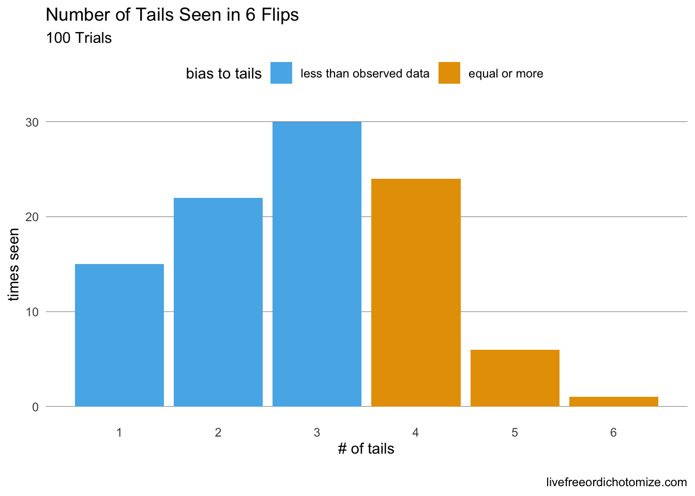

P-Values are annoying, let’s understand them so we dont get beaten by them.
Author
Nick Strayer
Published
December 24, 2016
Frequently, and especially recently, misunderstandings of common statistical terms/ concepts have caused confusion and even anger. I would like to (attempt) to clear up a big player in the world of commonly used (and commonly misunderstood) statistical concepts: the p-value.
A p-value is not a probability of the true parameter being something, but the percentage of times that the data you saw, or more extreme data, would occur given some “null” model. These are subtly, but importantly, different concepts.
Setup:
We will illustrate this concept with a story.
Say you are a cheating detection analyst at a casino. One day one of the casino’s employees comes up to you and tells you that there potentially are unfair coins being used in the casino (they seem to land on tails more frequently). It’s your job to figure out if they are fair or not. The employee hands you a piece of paper with something written on it and then runs away to attend to more important things than statistics. The paper says the following:
Heads = \(h\), Tails = \(t\) | \(t,t,h,t,t,h\)
After staring at this paper for a few minutes, you decide what you have is data on which face of a coin landed upright on a given flip, for a total of 6 flips. A fair coin in your opinion is one that has the same chance of falling on heads as it does tails, or 50-50. This is your null hypothesis: \(P(\text{tails}) = 0.5\). The employee said they thought the coins were biased towards tails, you want to test if they are, this is your alternative hypothesis: \(P(\text{tails}) > 0.5\). Your job as a statistician is to take this incredibly complex data and distill it to a single decision, the coin is fair (null), or the coin is biased towards tails (alternative).
You have a problem: you don’t even know how to find an unfair coin (or how unfair of a coin to find). You do, however, have a normal quarter in your back pocket (that you’re sure is fair). You decide that instead of getting up and finding a tail-biased coin, you can use your quarter to test if the data you have is not from a fair coin. (You also enjoy injecting negatives into your statements to obfuscate your point as much as possible.)
You roll over to your coin flipping table, get out your laptop and flip your quarter 6 times.
Warning: `data_frame()` was deprecated in tibble 1.1.0.
ℹ Please use `tibble()` instead.
#Plot the coin flips. #Code for plot_flips() is at the end of this document (it's ugly)flip_data %>%plot_flips()
Okay, so we got 2 heads on our 6 flips. Obviously the data given to us is from an unfair coin. You’re a good frequentist however, so you decide that, to be safe, you should repeat the experiment again to see what you get.
Oh no, you dropped your coin, better use R instead.
Oh look at that… 2 heads… that’s nice, but maybe we should do this a few more times. Maybe 100?
Back to R…
#Dataframe to hold our coin flipsflip_results <-data_frame(flip =character(), trial =numeric())#Number of trials of flipping our coin 6 times we want to do. number_of_trials <-100#Actually run the trials for(trial_number in1:number_of_trials){#Flip Coin 6 times and record results along with trial number flips <-flip_coin() %>%mutate(trial = trial_number)#Append this to our big results dataframe flip_results <- flip_results %>%bind_rows(flips)}#Let's plot all of these results into one big mega-graphflip_results %>%plot_flips() +facet_wrap(~trial) +#make a new mini plot for each triallabs(title ="Six Coin Flips | 100 Trials")
Well look at that, investigating this plot it doesn’t actually seem that out of the ordinary to get 4 tails in 6 flips, even though intuitively that sounds like tails happening twice as often as heads.
Just to make sure lets simplify the above plot to summarize the number of tails we saw for each of our 100 trials.
#Count how many tails we got in each trialtails_by_trial <- flip_results %>%#Take our resultsfilter(flip =="tails") %>%#Look at only tails resultsgroup_by(trial) %>%#Collapse per trialsummarise(number_of_tails =n()) #Count the number of heads per trial#Look at the first few of our results....tails_by_trial %>%head() %>%kable(align =c("r", "c"))
trial
number_of_tails
1
5
2
3
3
4
4
3
5
4
6
3
Looking at the first few results we can see that we have a range of tails counts, looking at tables is boring though. Let’s plot our data to really see what’s going on.
tails_by_trial %>%mutate(`bias to tails`=ifelse(number_of_tails >=4, "equal or more ", "less than observed data")) %>%ggplot(aes(x = number_of_tails, fill =`bias to tails`)) +geom_bar() +labs(title ="Number of Tails Seen in 6 Flips", subtitle ="100 Trials", x ="# of tails", y ="times seen") +scale_x_continuous(breaks =0:6) +#Beyond here is unneccesary ggplot style stuff. theme_minimal() +#I like pretty graphstheme(panel.grid.major.x =element_blank(),panel.grid.major.y =element_line( size=.1, color="black" ),panel.grid.minor =element_blank(),legend.position ="top") +scale_fill_discrete(guide =guide_legend(reverse=T))
Warning: The `size` argument of `element_line()` is deprecated as of
ggplot2 3.4.0.
ℹ Please use the `linewidth` argument instead.

The data we have: 4 tails out of 6 flips, looks pretty darn normal if our coin was fair. Case closed, right? Well you are a statistician so it’s your job to distill this down to a number, so let’s see exactly how “normal” our result is. We will do this by simply counting. Looking at the 100 trials that we did, how many times did the number of tails look at least as unfair as our data? Aka, how many times did we flip 4 or more tails in our 100 trials?
So, we have just shown that, given the coin is truly fair, in 100 trials we saw 31 of them to be as “biased” towards tails as the data we were given. \[\frac{31}{100} = 0.31= \boxed{\text{our p-value}}\]
Note that this is not “the probability that our coin is not fair”, it is simply, “given the coin was fair, how odd are our results?”
Note: This is not actually how most p-value are calculated. This is because when lots of this p-value stuff was developed we didn’t have computers around to do our coin-flipping-bidding so smart people come up with mathematical formulas that describe the behavior, thus allowing p-values to be calculated with pen and paper. These formulas are also more accurate than what we did in that they mimic flipping the coin an infinite amount of times.
Me trying to understand p-values for the first time: starecat.com.
The Caveat
But wait, you can’t leave just yet. We made one very important assumption in constructing this p-value. We assumed the “model” that our data came from. In this case we assumed that the “heads” and “tails” written on the page were from a single coin, flipped 6 times with two possible results (“heads” or “tails”). What if it wasn’t the case? What if in fact our data came from a mysterious 3 sided coin (all coins technically are). Then our p-value is totally wrong.
Something to always be aware of when looking at statistical results is that, to quote statistician George Box,
All models are wrong, but some are useful.
Almost never in real life are the p-values you see in the newspaper or a scientific journal article using the perfectly correct model. Lots of work has been done to make sure that we’re not making huge mistakes (or else statisticians like me would be out of a job), but very rarely (even in the example just given) are we using the correct model to generate our p-value.
Addendum
I most likely made some mistakes somewhere in this article. If you catch them and feel them important enough to be fixed send me a message on twitter or if you are feeling particularly altruistic, submit a pull request on the repo for this article
Here is the plotting code I used for the head tails plots. It’s kind of ugly and I’m sure there’s a more elegant way to code it.
#Function for plotting coin flips.
#Takes a dataframe with at least the column "flip" containing heads or tails in character value
plot_flips <- function(flip_data){
flip_data %>%
mutate(value = 1, flip_num = 1:dim(flip_data)[1]) %>%
ggplot(aes(x = flip, y = value, group = flip_num, fill = flip)) +
geom_bar(position = "stack", stat = "identity", color = "white") +
labs(x = "", y = "times seen", title = "Six Coin Flips") +
theme_minimal() +
theme(panel.grid.major = element_blank(),
panel.grid.minor = element_blank(),
strip.background = element_blank(),
strip.text = element_blank(),
axis.title = element_blank(),
axis.text = element_blank(),
axis.ticks = element_blank(),
legend.position = "bottom",
legend.title = element_blank())
}